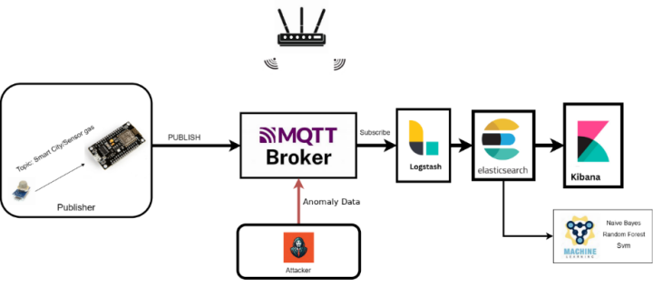
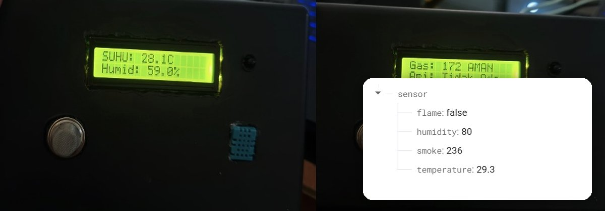
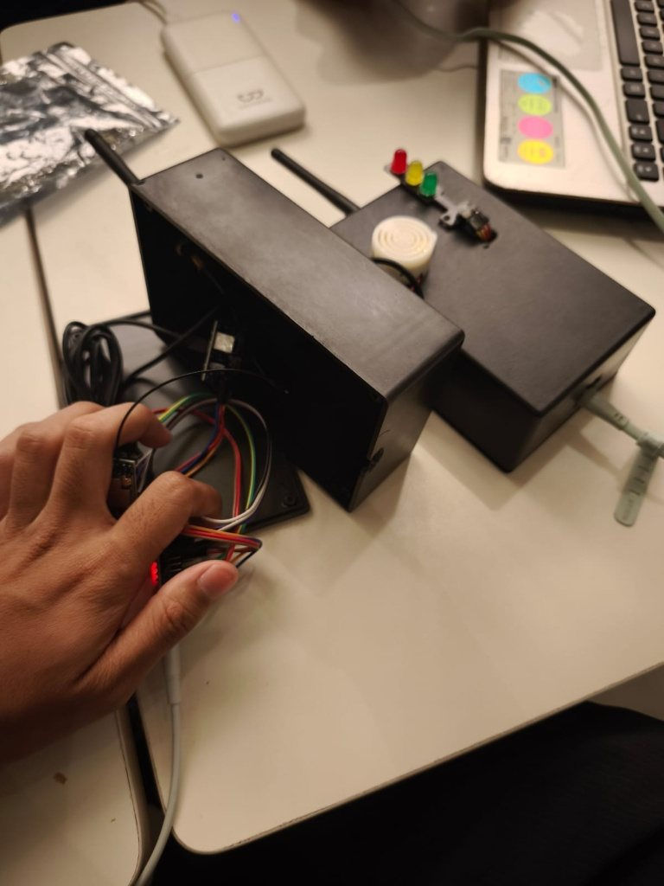
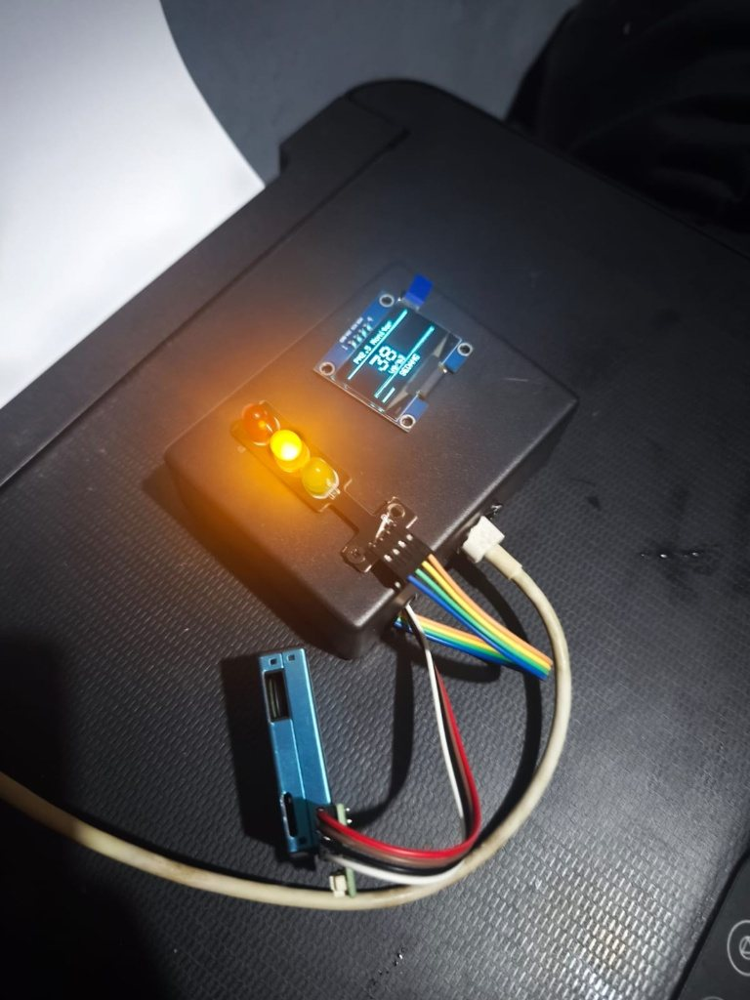
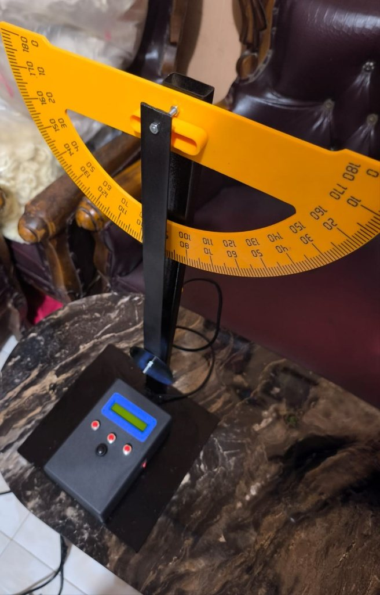

Skripsi · Juli 2026
SIEM Berbasis ELK Stack + Machine Learning untuk Deteksi Anomali Keamanan Smart City
Merancang SIEM berbasis ELK Stack untuk mengumpulkan dan memvisualisasikan log perangkat IoT (MQTT, sensor MQ-2) secara real-time di Kibana, lalu membandingkan Naive Bayes, Random Forest, dan SVM untuk mendeteksi serangan DDoS.
Hasil: SVM rasio 90:10 terbaik: akurasi 99,9%, recall anomali 100%, tanpa indikasi overfitting.
ELK StackKibanaMQTTscikit-learnSVM

Kerja Praktik · Feb – Mei 2025
Sistem Monitoring Lingkungan Laboratorium BSPJI Berbasis IoT dengan Firebase
Merancang dan memasang alat pemantau suhu, kelembaban, gas/asap, dan api di laboratorium pengujian BSPJI Palembang. ESP8266 mengirim data sensor ke Firebase Realtime Database, menampilkannya di LCD I2C, dan membunyikan buzzer serta mengirim peringatan WhatsApp ke petugas saat nilai melewati ambang batas.
Hasil: Berjalan stabil selama pengujian di laboratorium; buzzer dan notifikasi WhatsApp aktif saat simulasi kebocoran gas dan kenaikan suhu.
ESP8266DHT11MQ-2Flame SensorLCD I2CFirebaseWhatsApp Alert

Proyek IoT · LoRa
Sistem Deteksi Banjir IoT Berbasis LoRa
Sistem peringatan banjir jarak jauh dengan dua node ESP32. Transmitter membaca ketinggian air dengan sensor ultrasonik JSN-SR04T, menentukan status AMAN, SIAGA, atau BANJIR, lalu mengirimnya lewat modul LoRa Ra-02. Receiver membunyikan buzzer, menyalakan lampu lalu lintas, dan mengirim notifikasi Telegram lewat WiFi saat banjir terdeteksi.
Hasil: Peringatan dini otomatis: buzzer, lampu merah berkedip, dan pesan Telegram saat jarak sensor ke air 25 cm atau kurang.
ESP32LoRa Ra-02JSN-SR04TTelegram BotBuzzerTraffic Light LED

Proyek IoT · ESP32
Monitor Kualitas Udara PM2.5 dengan Indikator Lampu Lalu Lintas
Alat pemantau kualitas udara berbasis ESP32 dengan sensor partikel PMS7003 untuk membaca PM1.0, PM2.5, dan PM10, ditampilkan real-time di layar OLED SH1106G 1,3 inci. Tiga LED (hijau, kuning, merah) menunjukkan status udara berdasarkan kadar PM2.5.
Hasil: Status otomatis: BAIK (sampai 12), SEDANG (sampai 35), BURUK (sampai 55), SANGAT BURUK (sampai 150 µg/m³, LED merah berkedip).
ESP32PMS7003OLED SH1106GI2CTraffic Light LED

Proyek Embedded · Praktikum Fisika
Alat Pengukur Periode Bandul Fisika Otomatis
Alat ukur periode ayunan bandul berbasis ESP32 dengan sensor inframerah E18-D80NK dan LCD 16x2 I2C, menggantikan stopwatch manual. Pengguna mengatur jumlah getaran lewat tombol, alat menghitung mundur 3 detik, menghitung getaran otomatis setiap bandul melewati sensor, lalu menampilkan total waktu dan periode per getaran.
Hasil: Periode (T) dihitung otomatis dari total waktu dibagi jumlah getaran dan tampil di LCD dengan tiga angka desimal.
ESP32E18-D80NKLCD 16x2 I2CPush ButtonArduino IDE
🏆
Prestasi · 2025
Juara 1 Cluster Sumatra, Nusantara Cyber Security CTF
Menjuarai Capture The Flag tingkat cluster Sumatra. Sebelumnya mengikuti National Cyber Exercise #9 (Malware Stealer Scenario) di Medan, Oktober 2024.
CTFCyber SecurityEthical Hacking